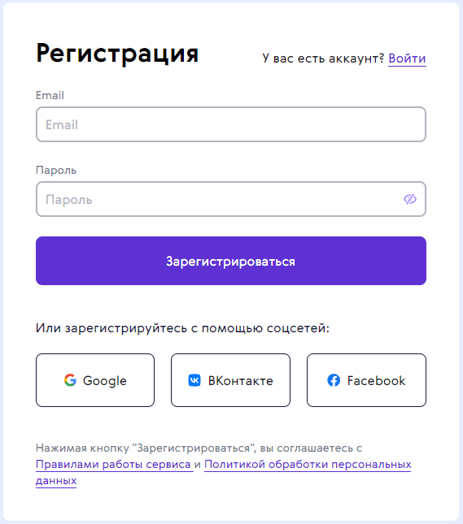
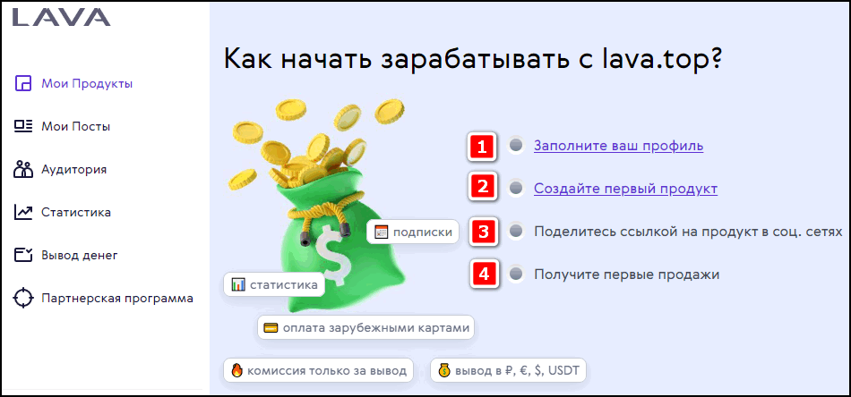
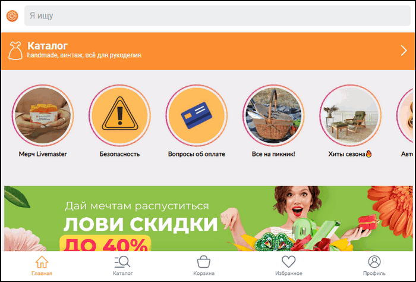
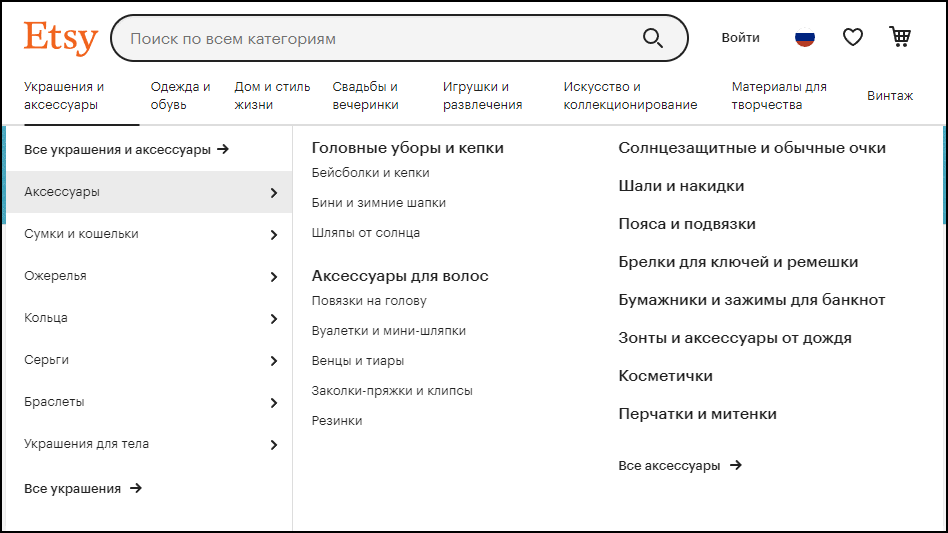
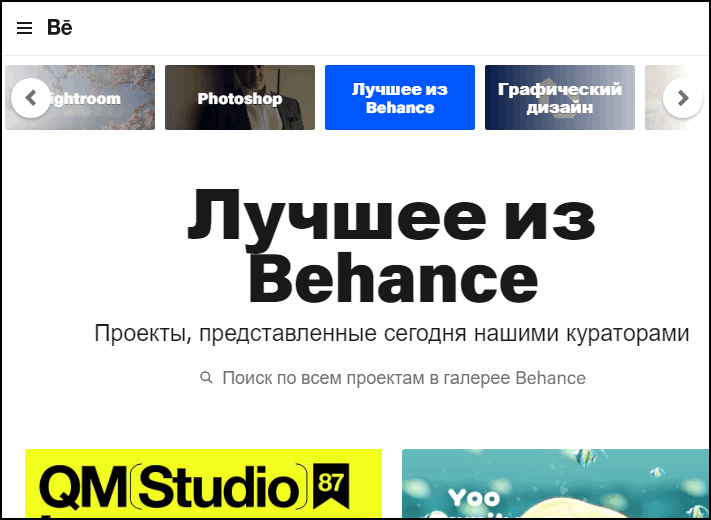
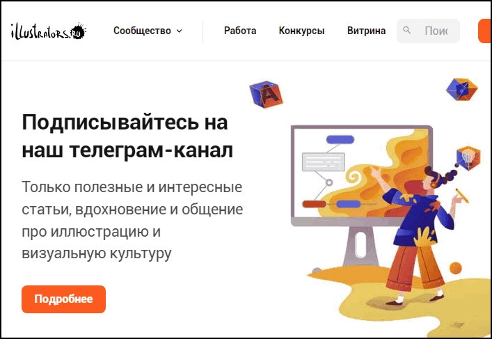
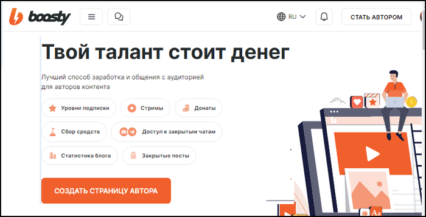

Идеи заработка на творчестве и обзор лучших площадок для монетизации контента

Зарабатывать на творчестве проще с биржами и площадками для размещения своих идей. Выбор таких сайтов обусловлен комиссией за вывод, наличием расширенных инструментов и полного списка творческой деятельности.
Идеи для заработка на творчестве
С помощью онлайн площадок можно монетизировать любимое дело и зарабатывать на творчестве, предлагая услуги по тарифу, который выбрал сам автор. К распространенной деятельности относятся:
- арты. Традиционное или диджитал;
- тексты. Написание рассказов, составление продающих текстов, редактура;
- хэндмейд. Изделия из дерева, украшения из бисера, вязанная одежда и игрушки;
- съемка видео и ведение социальных сетей;
- написание музыки;
- веб-дизайн;
- создание сайтов, Телеграм-ботов, работа с нейросетями;
- продвижение, настройка или очистка профилей Инстаграм* от некачественных подписчиков.
15 лучших платформ для монетизации контента
№1: lava.top
Заработать деньги творчеством на этой платформе могут авторы курсов, вебинаров, книг и рассказов. Основное требование – продавец должен быть экспертом в выбранной сфере. Платформа предполагает несколько форм оплаты для ваших покупателей:
Платформа предполагает несколько форм оплаты для ваших покупателей:
- бесплатно. В помощь начинающим другим авторам;
- единоразовая оплата. При продаже курсов и марафонов;
- ежемесячная. В течение установленного срока у покупателя будут списываться средства.
Как начать монетизировать свои знания с lava.top:
- Зарегистрироваться на официальном сайте lava.top.

- Заполните свой профиль информацией, добавьте свои продукты и услуги, поделитесь ссылкой, чтобы как можно больше людей увидело ваше предложение и начните зарабатывать на своих знаниях.

- Выводите деньги удобным для вас способом.
Платформа занимает первое место в нашем рейтинге, так как имеет самую низкую комиссию при продаже своих услуг и продуктов, бесплатное использование для всех авторов и дружелюбный интерфейс, с помощью которого быстро зарегистрироваться, заполнить профиль, добавить услуги и начать продавать.
№2 Ярмарка мастеров

Удобная платформа для тех, кто занимается хэндмейдом. От вязаный игрушек до самостоятельно написанных и выпущенных книг. Плюсы:- защита от недобросовестных покупателей и возвращение стоимости товара;
- безопасные сделки;
- своя торговая «точка», без необходимости создавать свой сайт.
Минусы:
- платное продвижение и абонентская плата, которые могут быть неэффективны для продаж;
- служба поддержки почти не реагирует на запросы от продавцов;
- ограниченное количество товаров. Чтобы увеличить – нужно оплатить повышенный тариф.
Продавцы и покупатели отмечают, что на площадке увеличилось число фабричных товаров. И из-за этого приходится снижать цены на ручные изделия.
№3 Etsy

Это международная площадка, направленная на работу с хэндмейдом. Его преимущества: разнообразие деятельности, управление магазином с помощью мобильного приложения, объявление остается активным в течение 4 месяцев. К недостаткам: ограничения по продажам, невозможность изменить внешний вид бренда, долгая доставка.№4 Behance

Нажать зарабатывать на творчестве через эту площадку могут веб-дизайнеры, иллюстраторы. У площадки ограниченный список возможной деятельности, куда в основной входит дизайн. Много преимуществ, как создание личного кабинета, высокая посещаемость и возможность участвовать в международных конкурсах. Основной недостаток – высокая конкуренция.№5 Patreon
Площадка подойдет авторам иллюстраций, для разработчиков игр, видеоблогеров и других создателей цифрового контента. Есть ряд недостатков, как блокировка в РФ, высокий процент комиссии и необходимость обзавестись аудиторией до того, как создавать аккаунт в Патреоне.
№6 Illustrators

Портал для художников, иллюстраторов, которые хотят делиться своим творчеством, участвовать в конкурсах и привлекать издательства. Из плюсов: возможность сотрудничества с компаниями, простой интерфейс, общение с другими авторами. Недостатки: необходимость регулярно пополнять витрину новыми работами, чтобы быть в ТОПе.№7 Gumroad
Площадка, где можно заработать первый миллион, размещая цифровые продукты. Например, 3D-концепты, арты, обучающие материалы. Плюсы: устанавливать свою цену, предлагать клиентам скидки и купоны, невысокая комиссия – всего 5%. Минусы: ограничения в способах оплаты, комиссия за обработку транзакций в 3%.
№8 Tilda
Тильда – это конструктов сайтов, с помощью которого можно создать портфолио, указать свою цену и выбрать дизайн магазина. На платформе есть шаблоны, которыми можно воспользоваться, чтобы создать площадку без привлечения экспертов. Из преимуществ: возможность самостоятельно отредактировать сайт, работать через мобильное приложение. Недостаток: ежемесячная абонентская плата, ограничение по количеству страниц и слотов, необходимость продвижения.
№9 Лори
Можно зарабатывать творчеством в Лори – это фотобанк, который направлен на продажу фотографий. Стать партнером могут фотографы, иллюстраторы и другие. Из плюсов: русскоязычный сервис для работы с изображениями, быстрый вывод. Недостатки: необходимость заключать договор, малое количество покупателей, проблемы с модерацией снимков.
№10 Luvly
Заработать творчеством в интернете возможно через этот сервис, предлагая векторные дизайны, цифровые иллюстрации. Из преимуществ: удобная разбивка по категориям, низкая конкуренция, еженедельные выплаты. Недостатки: низкая посещаемость, отсутствие русского языка в интерфейсе, ограничения по способам вывода.
№11 Motion Elements
Заработать деньги на этом сайте можно с помощью размещения фото и видеоматериалов. Из его преимуществ: популярен среди зарубежной аудитории, огромный фотобанк и привлечение компаний, издательств, размещение в других соц.сетях по одному клику. Из недостатков: ограничения в способе вывода, отсутствие русской версии, малоизвестен в странах СНГ.
№12 Zazzle
Площадка направлена на создание уникальных дизайнерских вещей. Авторы создают дизайн будущего продукта, после отправляют заявку на поиск компаний, который готовы воплотить мечту в реальность. Преимущества: неограниченное количество магазинов, возможность сотрудничества с крупными
№13 Threadless
Платформа монетизации контента подходит для тех, кто хочет создавать оригинальные вещи: футболки, свитшоты, обувь и аксессуары. Отдельный раздел под картины для украшения дома. Преимущества: популярность площадки, минимальные требования к оформлению магазина, отсутствие минимальной и максимальной ставки. Минусы: отсутствие продвижения, аудитория не приходит из поиска по сайту, а только из-за саморекламы.
№14 Boosty

Точно сказать, сколько зарабатывает автор на Boosty – сложно. Это площадка, которая объединяет авторов любого креативного цифрового контента. Это блогеры, авторы книг, разработчики, фанаты видеоигр. Преимущества: любой тип контента, система подписок, выбор контента который будет продаваться, возможность выводить на карты стандарта МИР. Недостатки: необходимость привлекать аудиторию с других площадок, подписчики не так активны в оформлении подписки.№15 Другие площадки для монетизации контента
Актуальные и не менее прибыльные способы заработка на творчестве – YouTube, Tik Tok, блог в Instagram, Like или ВК. От автора требуется постоянное присутствие: съемка клипов, создания фото, привлечение аудитории тематикой и концепцией блога. Как начать зарабатывать деньги через социальные сети:
- стать экспертом. Выбрать тематику, которая наиболее близка и предлагать платные консультации, брать рекламу;
- продавать свою продукцию. Хэндмейд, предлагать услуги кондитера, парикмахера или мастера маникюра;
- стать контент-мейкером, создателем видео для Reels, менеджером.
В зависимости от социальной сети, некоторые идеи могут быть неактуальны. Например, в Ютубе все популярнее только развлекательный контент. То же касается Лайка и Тик Тока. Но для ВК и Инстаграма* подходит с экспертным мнением – актуальная идея.